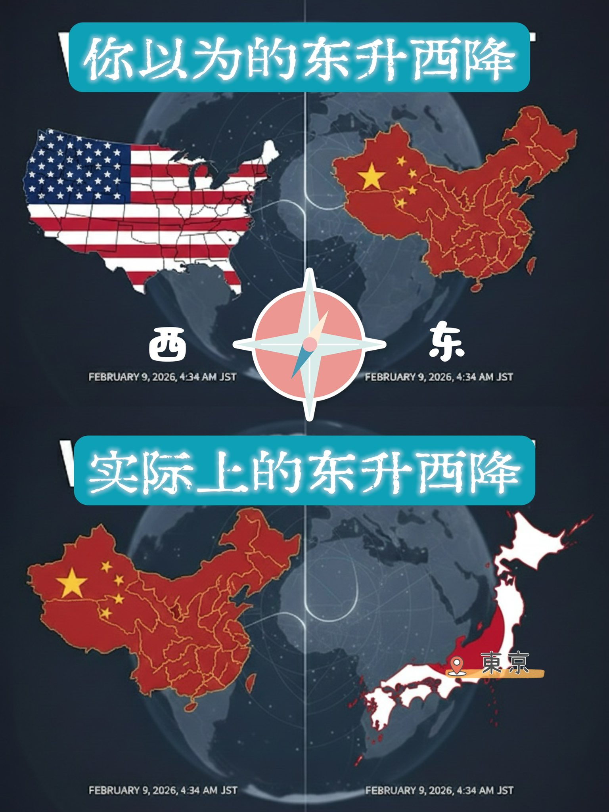

芜无吾
@seeyouinthe2999
@lovelycake 我恨中华人民共和国，我恨中华民国，我恨台湾共和国，我恨日本，我恨美国，我恨世界上所有的国家。世界上所有的无产阶级团结起来让我们一起打算毁灭国家这个体质，国家的本质就是来划分阶级进行剥削的，只有让国家消失才能实现共产，自由的乌托邦

小蛋糕（支持我请多转发😘）
@lovelycake
#高市早苗 大胜后
你以为的 东升西降😊
实际上的 东升西降🤡 https://t.co/XP1ueQGsfg https://t.co/LPi5zkldC0